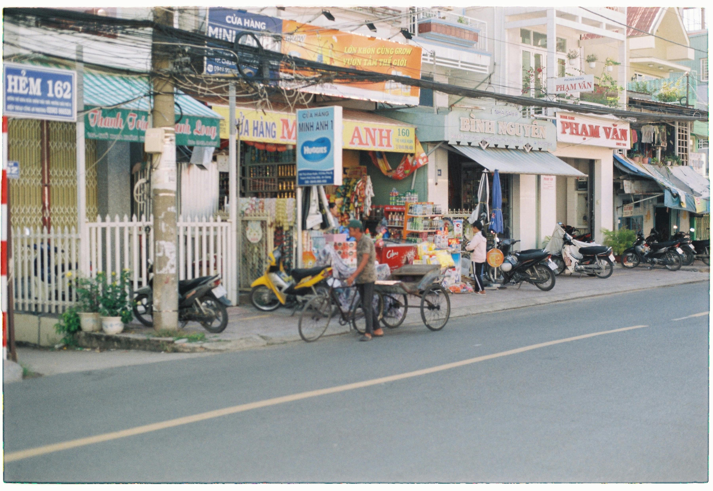

Respect the local culture
Embracing the local culture when traveling can transform a trip into a deeply enriching experience, allowing you to see the world through a new lens. Start by understanding and respecting local customs, as small gestures can make a big difference in how you’re received. Every place has its own etiquette, whether it’s the way people greet each other, approach dining, or show appreciation. For instance, some cultures value formal greetings, while others are more casual, so a little research or observation can help you navigate these nuances comfortably. Additionally, learning basic phrases in the local language—like “hello,” “thank you,” or “excuse me”—is a powerful way to connect with locals and show respect, even if your pronunciation isn’t perfect. Engaging in local events, such as festivals or traditional gatherings, gives you unique insight into the community’s history and values, helping you experience the destination in a more authentic way. Finally, be mindful of social cues regarding personal space and privacy, as these can vary widely. By approaching each interaction with curiosity and respect, you create positive connections, gaining a richer, more meaningful understanding of the place and its people.
Support local business at the place you travel
Supporting local businesses while traveling adds depth to your experience and directly contributes to the local economy, making it a win-win for both travelers and communities. Dining at family-owned restaurants, shopping at neighborhood markets, or choosing locally-owned accommodations allows you to enjoy an authentic taste of the region’s culture and hospitality. Each of these choices helps sustain local livelihoods and traditions, providing a more immersive experience than chain options. As you explore, it’s equally important to be mindful of the environment: practicing “leave no trace” principles, avoiding single-use plastics, and disposing of waste responsibly. Simple acts like bringing a reusable water bottle or refusing plastic bags demonstrate respect for the community and its natural surroundings. Many locals truly appreciate travelers who show care for their landscape and community spaces, as it reflects a commitment to preserving their home for future generations. This thoughtful approach to travel creates a positive impact, fostering goodwill and promoting sustainable tourism.
Be aware about your surrounding and always in positive way.

Respecting personal space and privacy is essential when traveling, particularly when capturing photos. Always ask permission before photographing individuals or private spaces, as this demonstrates cultural awareness and sensitivity to boundaries that may differ from your own. Taking the time to learn about the area’s history and customs—whether through guided tours, conversations, or local events—enriches your understanding and deepens your connection to the destination. Engaging with the community in this respectful, curious manner not only enhances your travel experience but also leaves a positive impression, showing you’re a thoughtful and considerate visitor. This approach fosters genuine connections and helps you appreciate the unique character of each place you visit.